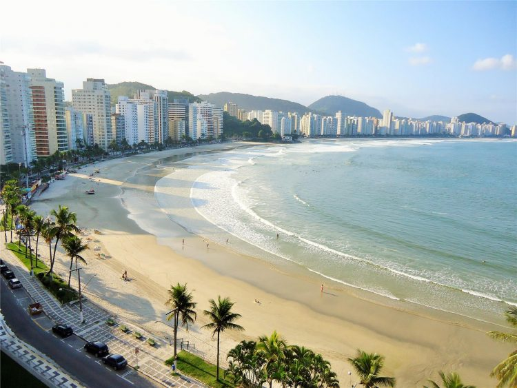
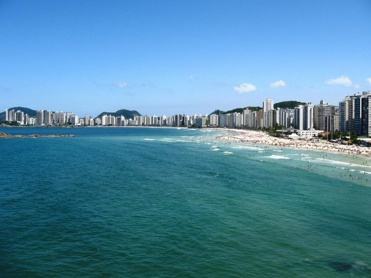
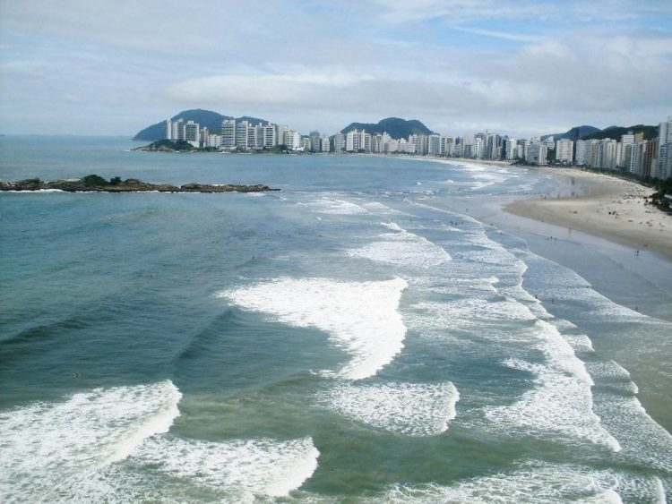
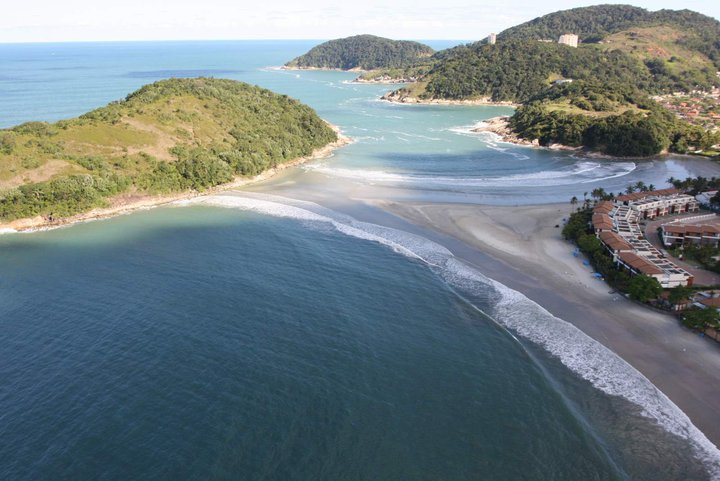

A Praia das Astúrias possui menos de 1km de extensão, mas, recompensa muito bem os visitantes com suas belezas naturais, que por sua vez, não são poucas. É bastante frequentada por famílias, já que possui águas ligeiramente tranquilas e areias branquinhas, fazendo com que idosos e crianças fiquem a vontade no mar, sem que se preocupem com as ondas fortes. E, além disso, é um excelente lugar para a prática da pesca, sendo assim, os adeptos a pesca, não só podem, como devem levar seus acessórios para a Praia das Astúrias e aproveitar bastante. Há, e se por um acaso esqueceres das cadeiras e dos guarda-sóis, não se preocupe, pois por ali, há barraquinhas que oferecem aluguel destes artigos praianos. Além, é claro, de quiosques com petiscos saborosos e bebidas geladinhas. Não deixe de beber uma refrescante água de coco, pois são refrescantes e trazem a hidratação que seu corpo precisa diante de um ambiente quente como a praia.
Site
Praia das Astúrias
A Praia das Astúrias possui menos de 1km de extensão, mas, recompensa muito bem os visitantes com suas belezas naturais, que por sua vez, não são poucas. É bastante frequentada por famílias, já que possui águas ligeiramente tranquilas e areias branquinhas, fazendo com que idosos e crianças fiquem a vontade no mar, sem que se preocupem com as ondas fortes. E, além disso, é um excelente lugar para a prática da pesca, sendo assim, os adeptos a pesca, não só podem, como devem levar seus acessórios para a Praia das Astúrias e aproveitar bastante. Há, e se por um acaso esqueceres das cadeiras e dos guarda-sóis, não se preocupe, pois por ali, há barraquinhas que oferecem aluguel destes artigos praianos. Além, é claro, de quiosques com petiscos saborosos e bebidas geladinhas. Não deixe de beber uma refrescante água de coco, pois são refrescantes e trazem a hidratação que seu corpo precisa diante de um ambiente quente como a praia.

Já a Praia da Enseada é mais extensa de todo Guarujá, com cerca de 5 km e meio de extensão. Localizada logo ali, ao norte da cidade. Local no qual, acabou se tornando parada obrigatória dos turistas. Sendo assim, não é a toa, que Enseada encanta a cada um que passar por ela, principalmente, por possuir uma larga faixa de areia clara e águas totalmente tranquilas. Nesta praia, quem gosta de mar, mas evita as ondas fortes, não sai um minuto se quer da água, já que é bem tranquilo. As crianças se reúnem na areia para brincar e se divertem. E, ao contrário do mar sossegado, a orla é bem movimentada durante o dia pelas famílias e a noite pela juventude. Alguns esportes, também marcam presença na praia, como o caiaque, o stand up surf e as indispensáveis caminhadas.
Site
Praia da Enseada
Já a Praia da Enseada é mais extensa de todo Guarujá, com cerca de 5 km e meio de extensão. Localizada logo ali, ao norte da cidade. Local no qual, acabou se tornando parada obrigatória dos turistas. Sendo assim, não é a toa, que Enseada encanta a cada um que passar por ela, principalmente, por possuir uma larga faixa de areia clara e águas totalmente tranquilas. Nesta praia, quem gosta de mar, mas evita as ondas fortes, não sai um minuto se quer da água, já que é bem tranquilo. As crianças se reúnem na areia para brincar e se divertem. E, ao contrário do mar sossegado, a orla é bem movimentada durante o dia pelas famílias e a noite pela juventude. Alguns esportes, também marcam presença na praia, como o caiaque, o stand up surf e as indispensáveis caminhadas.

A Praia das Pitangueiras é a praia central do Guarujá, sendo então, a primeira vista dos turistas que chegam de balsa ou até mesmo pela estrada. Pitangueiras é uma das praias mais antigas de Guarujá e, por conta disso, está rodeada de comércios e edifícios. Seu nome, tem origem curiosa, já que antigamente a praia era conhecida como Laranjeiras, pois ali havia plantações de laranja, mas com o passar do tempo, as laranjeiras foram substituídas por pitangueiras, daí seu nome. A praia é excelente para refrescantes banhos de mar, não há quem resista. E, se a fome bater, vá até alguns dos diversos restaurantes e bares que estão nos arredores.
Site
Praia das Pitangueiras
A Praia das Pitangueiras é a praia central do Guarujá, sendo então, a primeira vista dos turistas que chegam de balsa ou até mesmo pela estrada. Pitangueiras é uma das praias mais antigas de Guarujá e, por conta disso, está rodeada de comércios e edifícios. Seu nome, tem origem curiosa, já que antigamente a praia era conhecida como Laranjeiras, pois ali havia plantações de laranja, mas com o passar do tempo, as laranjeiras foram substituídas por pitangueiras, daí seu nome. A praia é excelente para refrescantes banhos de mar, não há quem resista. E, se a fome bater, vá até alguns dos diversos restaurantes e bares que estão nos arredores.

A Praia de Pernambuco, é praticamente, duas praias em uma só, isso porque, a faixa de areia divide o mar em duas partes. No lado direito, as ondas são mais agitadas e ideais para a prática do surf; e no lado esquerdo o mar é calmo, sendo preferível pelos banhistas. Além da presença constante dos surfistas, há também, a marcante presença de apaixonados por outros esportes, como o bodyboard, o caiaque, o vôlei de praia, o slackline, entre tantos outros. O visual deste verdadeiro paraíso natural atrai turistas não só nas altas temporadas, como em todas as épocas do ano. Afinal, viajar é sempre bom, independente do período.
Site
Praia de Pernambuco
A Praia de Pernambuco, é praticamente, duas praias em uma só, isso porque, a faixa de areia divide o mar em duas partes. No lado direito, as ondas são mais agitadas e ideais para a prática do surf; e no lado esquerdo o mar é calmo, sendo preferível pelos banhistas. Além da presença constante dos surfistas, há também, a marcante presença de apaixonados por outros esportes, como o bodyboard, o caiaque, o vôlei de praia, o slackline, entre tantos outros. O visual deste verdadeiro paraíso natural atrai turistas não só nas altas temporadas, como em todas as épocas do ano. Afinal, viajar é sempre bom, independente do período.